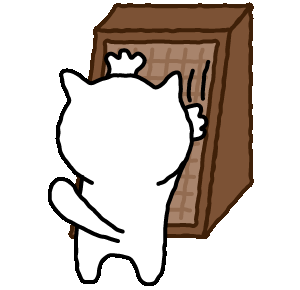
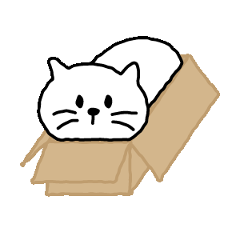
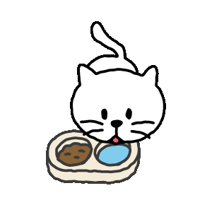
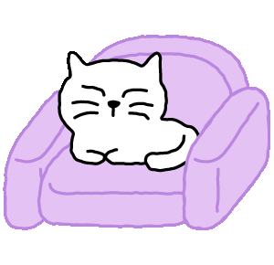
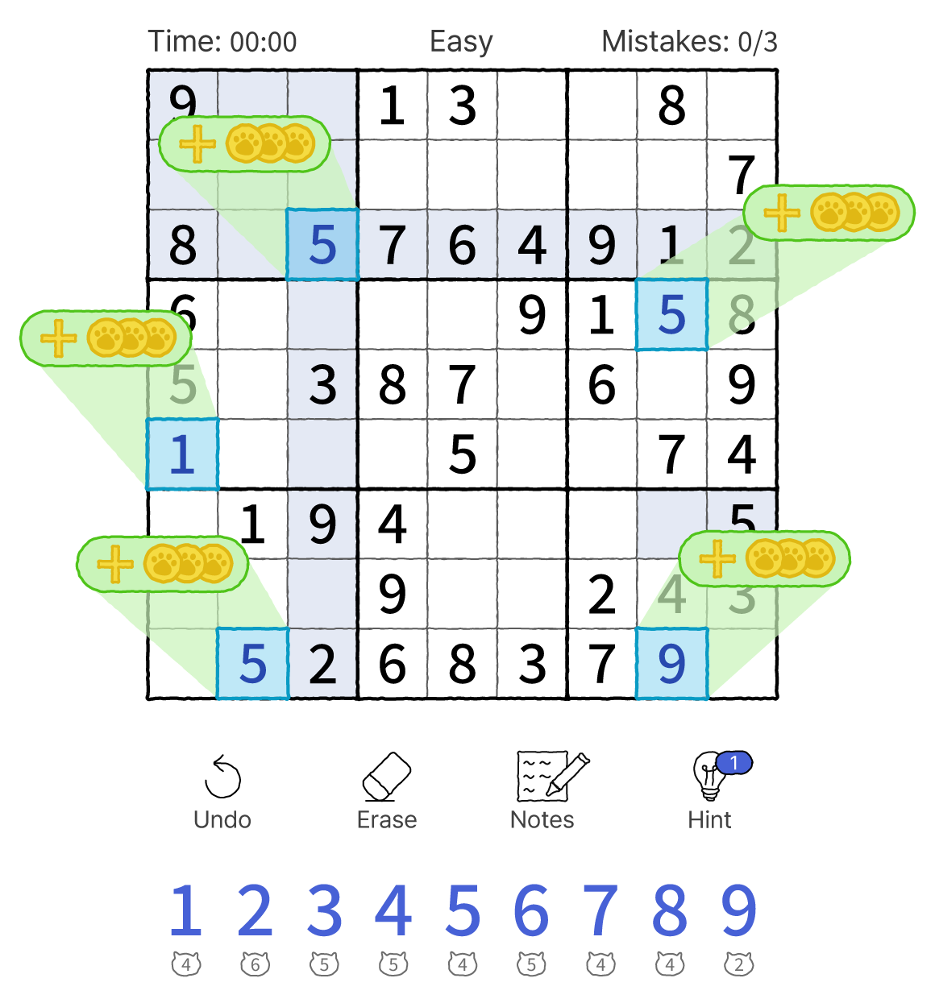
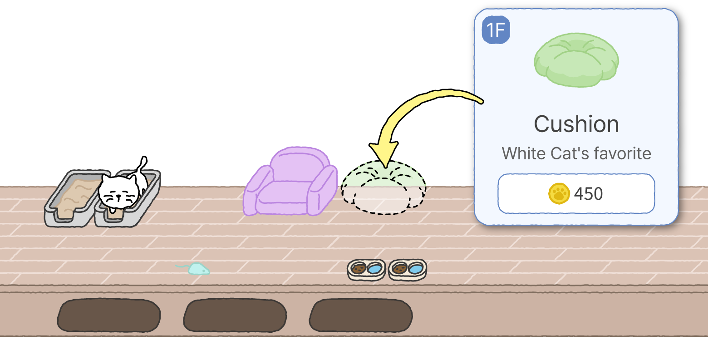
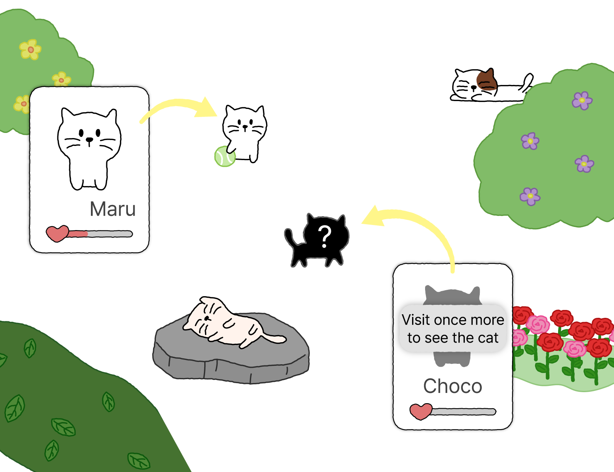
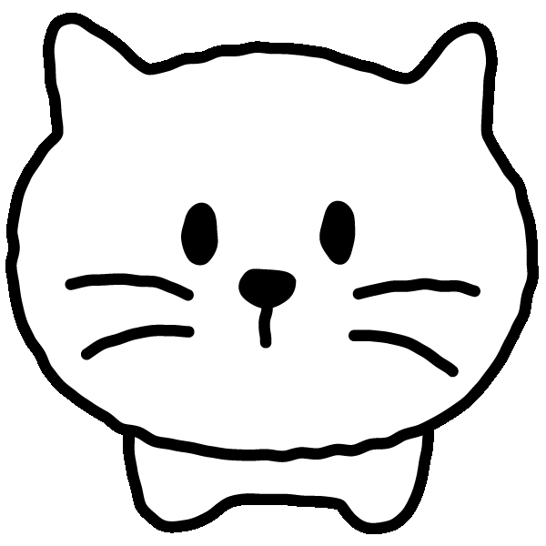

Solve sudoku.
Build a cozy shelter.

Download now
and claim your launch gift



Solve sudoku.
Build a cozy shelter.

Download now
and claim your launch gift
Three difficulties with notes, hints, and undo.
No time limits – just you, the numbers, and a calm afternoon.

Every puzzle you finish earns coins. Spend them on bowls,
cushions, and toys to build a shelter cats can't resist.

Shy cats drop by when you least expect it. Befriend them,
learn their quirks, and complete your collection of 30+ friends.

